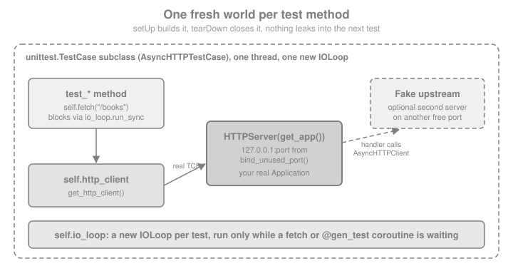

Testing
|
This content was generated with the assistance of AI and should be verified against the official documentation before being relied on in production. |
This page is written against Tornado 6.5.10 on Python 3.13, checked on 2026-10-07. Tornado 6.6 is only available as an
alpha (6.6a1) at the time of writing, so anything described as "6.6" below is upcoming and may still change. Every
Python example was executed with those versions (the pytest and pytest-asyncio examples with pytest 9.1 and
pytest-asyncio 1.4). The running example is the Bookshelf Live scenario: a small JSON API for books with a
signed-cookie login, an ISBN lookup that calls another service over HTTP, and a WebSocket feed.
Tornado ships its own test tools in tornado.testing, and they work differently from the test clients of other
frameworks. the test_client() of Flask and FastAPI’s TestClient call the application
object in-process, without a socket. Tornado’s AsyncHTTPTestCase does the opposite: for every test it builds a new
event loop, starts a real HTTPServer on a free loopback port and sends real HTTP requests to it. That makes the
tests slower than a direct call by a fraction of a millisecond each, and in exchange everything that a production
request goes through (the HTTP parser, headers, cookies, chunked bodies, WebSocket upgrades, the access log) is
exercised. The same machinery also tests code that has no HTTP at all (coroutines, queues, TCP servers), because
AsyncTestCase is just a unittest.TestCase that owns an event loop.
How the Test Harness Works
tornado.testing.AsyncTestCase is a subclass of unittest.TestCase. Its setUp creates a new IOLoop for each test
method and makes it the current loop (self.io_loop); its tearDown cancels tasks that are still pending, closes the
loop and its file descriptors, and re-raises any exception that escaped into the loop. AsyncHTTPTestCase adds a
server and a client on top of it, as the figure shows.

The consequences are the ones to remember:
-
Nothing leaks between tests. The application, its settings, the server, the client and the loop are rebuilt for every test method, because
get_app()is called fromsetUp. Put state (an in-memory store, a database connection) inget_apporsetUp, not in module globals. -
The test method is synchronous.
self.fetch()runs the loop until the response arrives and returns it. For anything that needsawaitthe method is anasync defdecorated with@gen_test. -
The loop only runs while the test waits. Background tasks created by the code under test make progress only while
fetchor a@gen_testcoroutine is waiting. A task that is still pending when the test ends is cancelled bytearDown. -
Failures in callbacks surface in the test. An exception that escapes into the loop is recorded and re-raised from
tearDown, so it fails the test instead of only being logged.
The Application Under Test
All the examples build on one application factory. A factory that accepts overrides is the testing-friendly shape for
a Tornado application too: each test gets its own Application with its own store, and settings such as
cookie_secret or xsrf_cookies can be changed for one test without touching the others. The cookie secret is
generated with secrets.token_hex, so there is no secret in the source. The routing, handler and settings details are
on Applications & Request Handlers and
Routing; the signed cookie and @authenticated on
Authentication & Signed Cookies.
import secrets
from tornado import httpclient, httpserver, web, websocket
from tornado.simple_httpclient import HTTPTimeoutError
from tornado.escape import json_decode, json_encode
class BooksHandler(web.RequestHandler):
def initialize(self, store):
self.store = store
def get(self):
self.write({"books": list(self.store.values())})
def post(self):
try:
title = json_decode(self.request.body)["title"]
except (ValueError, KeyError, TypeError):
raise web.HTTPError(400, "a JSON body with a title is required")
book = {"id": str(len(self.store) + 1), "title": title}
self.store[book["id"]] = book
self.set_status(201)
self.set_header("Location", f"/books/{book['id']}")
self.write(book)
class IsbnHandler(web.RequestHandler):
"""Look a book up in another service, the way a real handler would."""
async def get(self, isbn):
base = self.settings["isbn_service"]
client = self.settings.get("http_client") or httpclient.AsyncHTTPClient()
try:
response = await client.fetch(f"{base}/isbn/{isbn}")
except HTTPTimeoutError:
raise web.HTTPError(504)
except httpclient.HTTPClientError as error:
raise web.HTTPError(404 if error.code == 404 else 502)
except OSError:
raise web.HTTPError(502)
self.write(json_decode(response.body))
class ShelfHandler(web.RequestHandler):
def get_current_user(self):
return self.get_signed_cookie("user")
@web.authenticated
def get(self):
self.write({"owner": self.current_user.decode()})
@web.authenticated
def post(self):
self.write({"owner": self.current_user.decode(), "saved": True})
class FormHandler(web.RequestHandler):
def get(self):
self.write(self.xsrf_form_html())
class BoomHandler(web.RequestHandler):
def get(self):
raise RuntimeError("the database is on fire")
class LiveHandler(websocket.WebSocketHandler):
def open(self):
self.write_message({"hello": "bookshelf"})
def on_message(self, message):
self.write_message({"echo": message})
def make_app(store=None, **overrides):
settings = {
"cookie_secret": secrets.token_hex(32),
"login_url": "/login",
"isbn_service": "http://127.0.0.1:1",
}
store = {} if store is None else store
return web.Application(
[
(r"/books", BooksHandler, {"store": store}),
(r"/isbn/(\d+)", IsbnHandler),
(r"/shelf", ShelfHandler),
(r"/form", FormHandler),
(r"/boom", BoomHandler),
(r"/live", LiveHandler),
],
**{**settings, **overrides},
)Most of the examples run test classes. The helper below loads the given TestCase classes and runs them with the
standard unittest runner, which is all Tornado’s test classes need: they are plain unittest tests, so any runner
works. Tornado logs rejected requests (a 400 or a 403) as warnings on stderr; that noise is silenced properly with
ExpectLog further down, and the outputs shown here are the stdout of the runner.
import sys
import unittest
def run(*cases, verbosity=2):
suite = unittest.TestSuite(unittest.defaultTestLoader.loadTestsFromTestCase(case) for case in cases)
result = unittest.TextTestRunner(stream=sys.stdout, verbosity=verbosity).run(suite)
assert result.wasSuccessful()
return resultSource: Tornado: tornado.testing and Python: unittest
AsyncHTTPTestCase
Subclass AsyncHTTPTestCase, override get_app() to return the application (or any callable accepted by
HTTPServer), and call self.fetch(path, **kwargs).
| Member | Purpose |
|---|---|
|
Required. Returns the |
|
Synchronous request to the test server. The path is appended to the server’s host and port; an absolute
|
|
The absolute URL of a path on the test server: |
|
The port chosen for this test, different for every test. |
|
Keyword arguments for the |
|
The client used by |
|
The |
The first test class exercises the books endpoint. Each test asserts on the status code, a header and the decoded body,
the same triple a real client would look at. test_every_test_gets_a_new_store documents the isolation described
above: get_app runs for every test, so the store created in it is empty again.
from tornado.testing import AsyncHTTPTestCase, AsyncTestCase, ExpectLog, bind_unused_port, gen_test
class BooksApiTest(AsyncHTTPTestCase):
def get_app(self):
self.store = {}
return make_app(self.store)
def test_empty_shelf(self):
response = self.fetch("/books")
self.assertEqual(response.code, 200)
self.assertTrue(response.headers["Content-Type"].startswith("application/json"))
self.assertEqual(json_decode(response.body), {"books": []})
def test_create_then_list(self):
created = self.fetch("/books", method="POST", body=json_encode({"title": "Dune"}))
self.assertEqual(created.code, 201)
self.assertEqual(created.headers["Location"], "/books/1")
listed = json_decode(self.fetch("/books").body)
self.assertEqual([book["title"] for book in listed["books"]], ["Dune"])
def test_every_test_gets_a_new_store(self):
self.assertEqual(self.store, {})
def test_invalid_body_is_400(self):
self.assertEqual(self.fetch("/books", method="POST", body="not json").code, 400)
def test_unknown_route_is_404(self):
self.assertEqual(self.fetch("/nope").code, 404)
def test_raise_error_turns_status_into_exception(self):
with self.assertRaises(httpclient.HTTPClientError) as caught:
self.fetch("/nope", raise_error=True)
self.assertEqual(caught.exception.code, 404)
def test_get_url(self):
self.assertEqual(self.get_url("/books"), f"http://127.0.0.1:{self.get_http_port()}/books")
run(BooksApiTest)Source: Tornado: AsyncHTTPTestCase
test_create_then_list (__main__.BooksApiTest.test_create_then_list) ... ok
test_empty_shelf (__main__.BooksApiTest.test_empty_shelf) ... ok
test_every_test_gets_a_new_store (__main__.BooksApiTest.test_every_test_gets_a_new_store) ... ok
test_get_url (__main__.BooksApiTest.test_get_url) ... ok
test_invalid_body_is_400 (__main__.BooksApiTest.test_invalid_body_is_400) ... ok
test_raise_error_turns_status_into_exception (__main__.BooksApiTest.test_raise_error_turns_status_into_exception) ... ok
test_unknown_route_is_404 (__main__.BooksApiTest.test_unknown_route_is_404) ... ok
----------------------------------------------------------------------
Ran 7 tests in 0.020s
OKThree pitfalls come with fetch:
-
It is a blocking helper that runs the loop itself, so it cannot be called from inside an
@gen_testcoroutine, where the loop is already running. Inside a coroutine useawait self.http_client.fetch(self.get_url(path)), which raisestornado.httpclient.HTTPClientErrorfor non-2xx responses unlessraise_error=Falseis passed. -
That exception class is a different class from
tornado.web.HTTPError(it hascodeandresponse, notstatus_code), as explained on Error Handling. -
Before Tornado 6.0 a connection failure inside
fetchwas turned into a fake response with the code 599. In 6.x other errors are raised, so a test that expectedresponse.code == 599must be rewritten to catch the exception.
Server and Client Options
get_httpserver_options() configures the HTTPServer that wraps the application, which is how to test behaviour that
depends on server options. The example checks that a proxy-supplied client address is used when xheaders is on.
get_http_client() is the matching hook for the client, for instance to set defaults=dict(request_timeout=2).
class ProxyHeadersTest(AsyncHTTPTestCase):
def get_app(self):
class ClientIp(web.RequestHandler):
def get(self):
self.write(self.request.remote_ip)
return web.Application([(r"/ip", ClientIp)])
def get_httpserver_options(self):
return {"xheaders": True}
def test_remote_ip_comes_from_the_proxy_header(self):
response = self.fetch("/ip", headers={"X-Real-Ip": "203.0.113.7"})
self.assertEqual(response.body, b"203.0.113.7")
run(ProxyHeadersTest)test_remote_ip_comes_from_the_proxy_header (__main__.ProxyHeadersTest.test_remote_ip_comes_from_the_proxy_header) ... ok
----------------------------------------------------------------------
Ran 1 test in 0.003s
OKAsynchronous Tests with gen_test
A unittest method cannot be a coroutine, because nothing would await it. @tornado.testing.gen_test wraps an
async def (or a legacy generator) test method and runs it to completion with self.io_loop.run_sync, which is the
bridge between the synchronous test runner and the event loop. The decorated method works on any AsyncTestCase
subclass, AsyncHTTPTestCase included. Use it whenever a test needs await: concurrent requests, a WebSocket, a
queue, an asyncio primitive.
import asyncio
from tornado import queues
class ConcurrencyTest(AsyncHTTPTestCase):
def get_app(self):
return make_app()
@gen_test
async def test_parallel_requests(self):
urls = [self.get_url("/books")] * 5
responses = await asyncio.gather(*(self.http_client.fetch(url) for url in urls))
self.assertEqual([response.code for response in responses], [200] * 5)
@gen_test
async def test_error_status_raises_with_the_client_api(self):
with self.assertRaises(httpclient.HTTPClientError) as caught:
await self.http_client.fetch(self.get_url("/nope"))
self.assertEqual(caught.exception.code, 404)
@gen_test
async def test_error_status_as_a_response(self):
response = await self.http_client.fetch(self.get_url("/nope"), raise_error=False)
self.assertEqual(response.code, 404)
class IndexWorkerTest(AsyncTestCase):
"""No HTTP at all: AsyncTestCase is enough for coroutines and queues."""
@gen_test
async def test_worker_drains_the_queue(self):
queue, indexed = queues.Queue(), []
async def worker():
async for title in queue:
try:
indexed.append(title.upper())
finally:
queue.task_done()
task = asyncio.create_task(worker())
for title in ("dune", "emma", "ulysses"):
queue.put_nowait(title)
await queue.join()
task.cancel()
self.assertEqual(indexed, ["DUNE", "EMMA", "ULYSSES"])
run(ConcurrencyTest, IndexWorkerTest)Source: Tornado: gen_test
test_error_status_as_a_response (__main__.ConcurrencyTest.test_error_status_as_a_response) ... ok
test_error_status_raises_with_the_client_api (__main__.ConcurrencyTest.test_error_status_raises_with_the_client_api) ... ok
test_parallel_requests (__main__.ConcurrencyTest.test_parallel_requests) ... ok
test_worker_drains_the_queue (__main__.IndexWorkerTest.test_worker_drains_the_queue) ... ok
----------------------------------------------------------------------
Ran 4 tests in 0.012s
OKTimeouts
Every @gen_test test has a time limit, five seconds by default. It is a safety net: a coroutine that waits for an
event that never comes would otherwise hang the whole test run. When the limit is reached the coroutine is interrupted
and the test fails with a TimeoutError whose traceback points at the line where it was waiting. There are three
ways to change the limit:
| Where | Effect |
|---|---|
|
For one test. |
|
For the whole run, for tests that do not pass |
|
Returns the effective global value, for helpers that need the same limit. |
import io
class TimeoutDemo(AsyncTestCase):
@gen_test(timeout=0.2)
async def test_waits_for_an_event_nobody_sets(self):
await asyncio.Event().wait()
result = unittest.TextTestRunner(stream=io.StringIO()).run(
unittest.defaultTestLoader.loadTestsFromTestCase(TimeoutDemo)
)
print(result.errors[0][1].strip().splitlines()[-1])Source: Tornado: gen_test timeouts
TimeoutError: Operation timed out after 0.2 secondsForgetting the Decorator
A test method that is async def but not decorated returns a coroutine that nobody awaits, and a plain unittest
would count the test as passed without running a line of it. AsyncTestCase guards against that: it raises a
TypeError when the test method returns a coroutine or generator, and a ValueError for any other return value.
class ForgotTheDecorator(AsyncTestCase):
async def test_oops(self):
await asyncio.sleep(0)
result = unittest.TextTestRunner(stream=io.StringIO()).run(
unittest.defaultTestLoader.loadTestsFromTestCase(ForgotTheDecorator)
)
print(result.errors[0][1].strip().splitlines()[-1])Source: Tornado: AsyncTestCase
TypeError: Generator and coroutine test methods should be decorated with tornado.testing.gen_testTesting Authentication, Cookies and XSRF
A test does not need to go through the login form to be "logged in". The signed cookie is an ordinary Cookie header
whose value tornado.web.create_signed_value(secret, name, value) can produce from the application’s own
cookie_secret. Because the factory generated a random secret, the test reads it from app.settings. A small helper
method keeps the tests short and is the Tornado counterpart of Flaskr’s AuthActions fixture. Remember that
@authenticated redirects a GET to login_url and answers every other method with 403, so both are worth a test,
together with a forged cookie. More background is on
Authentication & Signed Cookies.
class ShelfAuthTest(AsyncHTTPTestCase):
def get_app(self):
self.app = make_app()
return self.app
def login_as(self, user):
value = web.create_signed_value(self.app.settings["cookie_secret"], "user", user)
return {"Cookie": f"user={value.decode()}"}
def test_anonymous_get_is_redirected_to_the_login_page(self):
response = self.fetch("/shelf", follow_redirects=False)
self.assertEqual(response.code, 302)
self.assertTrue(response.headers["Location"].startswith("/login?next="))
def test_anonymous_post_is_403_not_a_redirect(self):
with ExpectLog("tornado.access", ".*POST /shelf.*"):
response = self.fetch("/shelf", method="POST", body="")
self.assertEqual(response.code, 403)
def test_signed_in_user(self):
response = self.fetch("/shelf", headers=self.login_as("alice"))
self.assertEqual(json_decode(response.body), {"owner": "alice"})
def test_unsigned_cookie_is_not_trusted(self):
response = self.fetch("/shelf", headers={"Cookie": "user=alice"}, follow_redirects=False)
self.assertEqual(response.code, 302)
run(ShelfAuthTest)Source: Tornado: create_signed_value
test_anonymous_get_is_redirected_to_the_login_page (__main__.ShelfAuthTest.test_anonymous_get_is_redirected_to_the_login_page) ... ok
test_anonymous_post_is_403_not_a_redirect (__main__.ShelfAuthTest.test_anonymous_post_is_403_not_a_redirect) ... ok
test_signed_in_user (__main__.ShelfAuthTest.test_signed_in_user) ... ok
test_unsigned_cookie_is_not_trusted (__main__.ShelfAuthTest.test_unsigned_cookie_is_not_trusted) ... ok
----------------------------------------------------------------------
Ran 4 tests in 0.011s
OKWith xsrf_cookies=True every POST, PUT and DELETE needs a token. A test for the protection does what a browser
would: it first makes a GET that sets the _xsrf cookie, then sends the same value back in the X-XSRFToken
header together with the cookie. The mechanism is explained on
XSRF & Cross-origin Protection. Testing both directions
(rejected without a token, accepted with one) proves that the setting is on and that the client contract works.
class XsrfTest(AsyncHTTPTestCase):
def get_app(self):
return make_app(xsrf_cookies=True)
def xsrf_headers(self):
cookie = self.fetch("/form").headers["Set-Cookie"].split(";")[0]
return {"Cookie": cookie, "X-XSRFToken": cookie.split("=", 1)[1]}
def test_post_without_a_token_is_403(self):
with ExpectLog("tornado.general", ".*'_xsrf' argument missing from POST"):
with ExpectLog("tornado.access", ".*POST /books.*"):
response = self.fetch("/books", method="POST", body=json_encode({"title": "Dune"}))
self.assertEqual(response.code, 403)
def test_post_with_cookie_and_header_is_accepted(self):
response = self.fetch(
"/books", method="POST", body=json_encode({"title": "Dune"}), headers=self.xsrf_headers()
)
self.assertEqual(response.code, 201)
run(XsrfTest)test_post_with_cookie_and_header_is_accepted (__main__.XsrfTest.test_post_with_cookie_and_header_is_accepted) ... ok
test_post_without_a_token_is_403 (__main__.XsrfTest.test_post_without_a_token_is_403) ... ok
----------------------------------------------------------------------
Ran 2 tests in 0.008s
OKTesting WebSockets
The test server speaks WebSocket like any other server, so the client side of the test is
tornado.websocket.websocket_connect, pointed at the ws:// form of get_url. It returns a connection whose
read_message() and write_message() are coroutines, which is why these tests use @gen_test. read_message()
returns None once the connection is closed. Origin checking is also testable: a handler that keeps the default
check_origin refuses a handshake whose Origin header names a different host than the Host header, and the
failed handshake raises an HTTPClientError with the status 403. The handlers are covered in
WebSockets.
from tornado.websocket import websocket_connect
class LiveFeedTest(AsyncHTTPTestCase):
def get_app(self):
return make_app()
def ws_url(self, path):
return self.get_url(path).replace("http://", "ws://", 1)
@gen_test
async def test_greeting_and_echo(self):
connection = await websocket_connect(self.ws_url("/live"))
self.assertEqual(json_decode(await connection.read_message()), {"hello": "bookshelf"})
await connection.write_message("any news?")
self.assertEqual(json_decode(await connection.read_message()), {"echo": "any news?"})
connection.close()
self.assertIsNone(await connection.read_message())
@gen_test
async def test_foreign_origin_is_rejected(self):
request = httpclient.HTTPRequest(self.ws_url("/live"), headers={"Origin": "https://evil.example"})
with ExpectLog("tornado.access", ".*GET /live.*"):
with self.assertRaises(httpclient.HTTPClientError) as caught:
await websocket_connect(request)
self.assertEqual(caught.exception.code, 403)
run(LiveFeedTest)test_foreign_origin_is_rejected (__main__.LiveFeedTest.test_foreign_origin_is_rejected) ... ok
test_greeting_and_echo (__main__.LiveFeedTest.test_greeting_and_echo) ... ok
----------------------------------------------------------------------
Ran 2 tests in 0.007s
OKExpecting Log Output
Tornado logs a lot while serving: an access line for every request (tornado.access, at warning level for 4xx and error level for 5xx),
a warning for each HTTPError (on tornado.general), an error with a stack trace for an uncaught exception (tornado.application, with
tornado.general used for the warnings about handled errors such as 400 and 403 responses). A test of an error path
produces that output on purpose, and it would drown the test report. tornado.testing.ExpectLog is a context manager
that swallows matching records and, by default, fails the test when no record matched, which turns the logging of an
error into something the test asserts.
| Argument | Meaning |
|---|---|
|
A logger object or its name; |
|
Regular expression matched with |
|
Default |
|
Added in 6.1. Match only records of this level, and lower the logger’s level for the duration of the block if needed. |
The logged_stack attribute tells whether any matched record carried an exception traceback. Since 6.3 matching a
record below WARNING without passing level raises a DeprecationWarning, because 7.0 will only match WARNING and
above by default (this keeps tests identical whether tornado.testing.main, which enables INFO logging, or another
runner is used).
import logging
class LoggingTest(AsyncHTTPTestCase):
def get_app(self):
return make_app()
def test_uncaught_exception_is_logged_with_a_stack(self):
with ExpectLog("tornado.application", "Uncaught exception GET /boom") as expected:
response = self.fetch("/boom")
self.assertEqual(response.code, 500)
self.assertTrue(expected.logged_stack)
def test_a_missing_log_line_fails_the_test(self):
with self.assertRaises(Exception) as caught:
with ExpectLog("tornado.application", "this is never logged"):
self.fetch("/books")
self.assertEqual(str(caught.exception), "did not get expected log message")
def test_required_false_only_silences(self):
with ExpectLog("tornado.access", ".*GET /nope.*", required=False, level=logging.WARNING):
self.assertEqual(self.fetch("/nope").code, 404)
run(LoggingTest)Source: Tornado: ExpectLog
test_a_missing_log_line_fails_the_test (__main__.LoggingTest.test_a_missing_log_line_fails_the_test) ... ok
test_required_false_only_silences (__main__.LoggingTest.test_required_false_only_silences) ... ok
test_uncaught_exception_is_logged_with_a_stack (__main__.LoggingTest.test_uncaught_exception_is_logged_with_a_stack) ... ok
----------------------------------------------------------------------
Ran 3 tests in 0.008s
OKFree Ports, Fake Upstreams and Mocks
tornado.testing.bind_unused_port(reuse_port=False, address="127.0.0.1") binds a socket to a free port and returns
(socket, port) (6.2 added address). AsyncHTTPTestCase uses it for the application server, and it is the right
tool for any other server a test needs. It avoids hard-coded ports that collide on a busy CI machine, and the port
is already bound when the function returns, so there is no race between "find a free port" and "start listening".
The Bookshelf’s IsbnHandler calls another service. There are two ways to test it without the real service, and they
catch different mistakes.
| Technique | Strength | Weakness |
|---|---|---|
A local fake server (a second |
Exercises the real HTTP client, serialisation, headers, status handling and timeouts. Works unchanged if the handler switches client library settings. |
More code; failures that are awkward to produce (a timeout, a half-open connection) need a deliberately slow or broken fake handler. |
|
Produces any exception or response instantly, including |
Tests the handler against your idea of the client, not against HTTP. Patch the narrowest thing and keep at least one test against a fake server. |
The class below uses both. The fake upstream is started in get_app, which runs inside setUp with the test’s loop
already current, and stopped in tearDown. Patching uses unittest.mock.AsyncMock, which makes fetch awaitable.
import io
from unittest import mock
class FakeIsbnService(web.RequestHandler):
def get(self, isbn):
if isbn != "9780441013593":
raise web.HTTPError(404)
self.write({"isbn": isbn, "title": "Dune"})
class IsbnLookupTest(AsyncHTTPTestCase):
def get_app(self):
socket, port = bind_unused_port()
self.upstream = httpserver.HTTPServer(web.Application([(r"/isbn/(\d+)", FakeIsbnService)]))
self.upstream.add_sockets([socket])
self.upstream_url = f"http://127.0.0.1:{port}"
self.app = make_app(isbn_service=self.upstream_url)
return self.app
def tearDown(self):
self.upstream.stop()
self.io_loop.run_sync(self.upstream.close_all_connections)
super().tearDown()
def test_known_isbn(self):
response = self.fetch("/isbn/9780441013593")
self.assertEqual(json_decode(response.body)["title"], "Dune")
def test_unknown_isbn_is_404(self):
with ExpectLog("tornado.access", ".*"):
self.assertEqual(self.fetch("/isbn/9999999999999").code, 404)
def test_service_down_is_502(self):
dead_socket, dead_port = bind_unused_port()
dead_socket.close() # nothing listens on this port any more
self.app.settings["isbn_service"] = f"http://127.0.0.1:{dead_port}"
with ExpectLog("tornado.access", ".*"):
self.assertEqual(self.fetch("/isbn/9780441013593").code, 502)
def test_upstream_timeout_is_504_with_a_mock(self):
client = mock.Mock()
client.fetch = mock.AsyncMock(side_effect=HTTPTimeoutError("Timeout during request"))
self.app.settings["http_client"] = client
with ExpectLog("tornado.access", ".*"):
self.assertEqual(self.fetch("/isbn/9780441013593").code, 504)
client.fetch.assert_awaited_once_with(f"{self.upstream_url}/isbn/9780441013593")
def test_canned_response_with_a_mock(self):
body = json_encode({"isbn": "1", "title": "Mocked"}).encode()
canned = httpclient.HTTPResponse(httpclient.HTTPRequest("http://upstream/"), 200, buffer=io.BytesIO(body))
self.app.settings["http_client"] = mock.Mock(fetch=mock.AsyncMock(return_value=canned))
self.assertEqual(json_decode(self.fetch("/isbn/1").body)["title"], "Mocked")
run(IsbnLookupTest)Source: Tornado: bind_unused_port
test_canned_response_with_a_mock (__main__.IsbnLookupTest.test_canned_response_with_a_mock) ... ok
test_known_isbn (__main__.IsbnLookupTest.test_known_isbn) ... ok
test_service_down_is_502 (__main__.IsbnLookupTest.test_service_down_is_502) ... ok
test_unknown_isbn_is_404 (__main__.IsbnLookupTest.test_unknown_isbn_is_404) ... ok
test_upstream_timeout_is_504_with_a_mock (__main__.IsbnLookupTest.test_upstream_timeout_is_504_with_a_mock) ... ok
----------------------------------------------------------------------
Ran 5 tests in 0.019s
OKTwo details of the mock tests matter. The handler takes its client from the http_client setting when there is one
(and uses the shared AsyncHTTPClient() otherwise), so the test swaps the client of one application instead of
patching the AsyncHTTPClient class. A class-wide mock.patch.object(AsyncHTTPClient, "fetch", ...) would also
replace the fetch that the test case’s own self.fetch uses to reach the server under test, and the test would
talk to the mock instead of the application. Injecting the client through settings or initialize(**kwargs) is
therefore the testable design; the same applies to database pools, Redis clients and clocks (see
Applications & Request Handlers for initialize).
The second detail is that AsyncMock.assert_awaited_once_with checks the call as the handler made it, which
is the part of the contract a fake server cannot show.
Running the Tests
AsyncTestCase and its subclasses are plain unittest.TestCase classes, so every runner that understands
unittest runs them, with no Tornado-specific plugin.
| Runner | Command | Notes |
|---|---|---|
|
|
Nothing to install. |
|
|
A wrapper around |
|
|
Collects |
python -m unittest discover -s tests -v
python -m tornado.testing tests.test_books --verbose --logging=debug
ASYNC_TEST_TIMEOUT=30 pytest -q # a slower CI machine: raise the global timeoutSource: Tornado: tornado.testing.main
pytest Without unittest Classes
Teams that prefer pytest-style functions and fixtures have two supported routes. The first is the one above: keep the
AsyncHTTPTestCase classes and let pytest collect them. The second drops Tornado’s test classes and uses the
pytest-asyncio plugin, an async fixture that starts a real HTTPServer on a bind_unused_port socket, and an
AsyncHTTPClient. The fixture below is a faithful replacement for what AsyncHTTPTestCase.setUp and tearDown do.
pytest-asyncio is a third-party plugin (pip install pytest pytest-asyncio) whose API is documented by that
project, not by Tornado. With pythonpath = . and asyncio_default_fixture_loop_scope = function in the [pytest]
section of pytest.ini, the application package is importable and every test gets a fresh loop, like Tornado’s own
classes do.
# norun - a pytest file (tests/conftest.py plus tests/test_books.py), executed separately with pytest
# tests/conftest.py
import pytest_asyncio
from tornado import httpclient, httpserver
from tornado.testing import bind_unused_port
from bookshelf.app import make_app
@pytest_asyncio.fixture
async def base_url():
sock, port = bind_unused_port()
server = httpserver.HTTPServer(make_app())
server.add_sockets([sock])
try:
yield f"http://127.0.0.1:{port}"
finally:
server.stop()
await server.close_all_connections()
httpclient.AsyncHTTPClient().close()
# tests/test_books.py
import pytest
from tornado.httpclient import AsyncHTTPClient
@pytest.mark.asyncio
async def test_empty_shelf(base_url):
response = await AsyncHTTPClient().fetch(f"{base_url}/books")
assert response.code == 200Source: Tornado: tornado.testing
unittest.IsolatedAsyncioTestCase
Since Tornado 5 runs on top of asyncio, the standard library’s unittest.IsolatedAsyncioTestCase works too: the
test methods are async def without any decorator, asyncSetUp and asyncTearDown are coroutines, and Tornado
servers and clients attach to the running loop. The cost is that you assemble the server by hand (what
AsyncHTTPTestCase does for you), and Tornado’s extras (ExpectLog, the gen_test timeout, the cancel-pending-tasks
clean-up) are not applied, though ExpectLog is just a logging filter and still works.
class AsyncioStyleTest(unittest.IsolatedAsyncioTestCase):
async def asyncSetUp(self):
socket, port = bind_unused_port()
self.server = httpserver.HTTPServer(make_app())
self.server.add_sockets([socket])
self.base = f"http://127.0.0.1:{port}"
self.client = httpclient.AsyncHTTPClient()
async def asyncTearDown(self):
self.server.stop()
await self.server.close_all_connections()
self.client.close()
async def test_create_and_list(self):
created = await self.client.fetch(f"{self.base}/books", method="POST", body='{"title": "Emma"}')
self.assertEqual(created.code, 201)
listed = await self.client.fetch(f"{self.base}/books")
self.assertEqual(json_decode(listed.body)["books"][0]["title"], "Emma")
run(AsyncioStyleTest)test_create_and_list (__main__.AsyncioStyleTest.test_create_and_list) ... ok
----------------------------------------------------------------------
Ran 1 test in 0.032s
OKHTTPS in Tests
AsyncHTTPSTestCase has the interface of AsyncHTTPTestCase, but serves TLS, with a self-signed certificate that ships
inside Tornado’s own test directory, and its client is created with validate_cert=False. Use it for behaviour that
depends on the scheme: Secure cookies, request.protocol, redirects to https://, HSTS headers. Override
get_ssl_options() to select your own certificate or protocol versions. The shipped key is public, so the
class is for tests only and must never be copied into a real server.
from tornado.testing import AsyncHTTPSTestCase
class SecureCookieTest(AsyncHTTPSTestCase):
def get_app(self):
class Login(web.RequestHandler):
def get(self):
self.set_cookie("session", "token-for-the-test", secure=True, httponly=True, samesite="Lax")
self.write(self.request.protocol)
return web.Application([(r"/login", Login)])
def test_cookie_flags_over_tls(self):
response = self.fetch("/login")
self.assertEqual(response.body, b"https")
cookie = response.headers["Set-Cookie"]
self.assertTrue(all(flag in cookie for flag in ("Secure", "HttpOnly", "SameSite=Lax")))
run(SecureCookieTest)Source: Tornado: AsyncHTTPSTestCase
test_cookie_flags_over_tls (__main__.SecureCookieTest.test_cookie_flags_over_tls) ... ok
----------------------------------------------------------------------
Ran 1 test in 0.018s
OKLegacy: stop(), wait() and get_new_ioloop()
Older test suites (and some book recipes) use callbacks: the test starts an operation with a callback that calls
self.stop(), and then calls self.wait(), which runs the loop until stop is called or the timeout expires; arguments
given to stop are returned by wait. This style has been deprecated since 5.1 in favour of @gen_test, and the
condition and timeout arguments of wait exist only for it. It still works in 6.5.10 and is useful to recognise
when migrating old code, but new tests should not use it. AsyncHTTPTestCase.fetch and @gen_test are
incompatible with it in the same test.
class LegacyStyleTest(AsyncTestCase):
def test_callback_style(self):
self.io_loop.call_later(0.01, self.stop, "done")
self.assertEqual(self.wait(timeout=2), "done")
run(LegacyStyleTest)Source: Tornado: AsyncTestCase.wait
test_callback_style (__main__.LegacyStyleTest.test_callback_style) ... ok
----------------------------------------------------------------------
Ran 1 test in 0.011s
OK
/Users/airurueta/irurueta2/common/docs/modules/ROOT/pages/backend/tornado/testing.adoc: ran=15 skipped=1 failed=0AsyncTestCase.get_new_ioloop() (return the loop to use for the test) was deprecated in 6.3 and will be removed in
version 7.0. It existed for suites that needed the global current loop or a loop supplied by pytest-asyncio; the
replacements are the IsolatedAsyncioTestCase style above or the fixture-based style, which do not need Tornado’s
loop management at all.
Pitfalls and Recommendations
| Pitfall | What to do |
|---|---|
A global |
Build both in |
|
|
|
It runs the loop while the loop is running. Use |
Blocking code in a handler under test (a |
The single-threaded server cannot answer while it blocks, so the test client waits until its timeout. This is the same bug as in production; see Asynchronous I/O & the Event Loop. |
|
|
Real network access to third-party services |
Replace the service with a fake server on a |
Hard-coded ports, cookie secrets or credentials in tests |
Take the port from |
Log noise from error-path tests |
Wrap the request in |
Tests that sleep to wait for background work |
Await an |
Debug mode in test applications |
|
A sensible shape for the Bookshelf project is a test pyramid in the sense of the
Flask testing page: many fast tests of pure functions and coroutines on AsyncTestCase, a moderate number of
AsyncHTTPTestCase tests of handlers with fakes for external services, and a few end-to-end tests against a deployed
instance. The Docker and Kubernetes sections cover
building the image that CI would run these tests in. For databases, pass a SQLite or in-memory fake through
initialize, as described on SQL databases, or run the real engine from CI services;
for Redis, fakeredis provides an in-process fake of the redis.asyncio client, and
Redis covers the real server.
What Changed Across Versions
| Version | Change relevant to testing |
|---|---|
5.0 |
|
5.1 |
|
6.0 |
Callbacks are gone from the HTTP client, so |
6.1 |
|
6.2 |
|
6.3 |
|
6.5.0 |
Python 3.9 minimum; no change to |
6.6 (alpha 6.6a1, upcoming) |
Python 3.11 becomes the minimum (3.9 and 3.10 are dropped) and Python 3.15 is supported. No change to the
|
7.0 (planned) |
Removal of everything deprecated above: |
What’s Changed & Migration collects the legacy to current mapping for every area, not only testing.